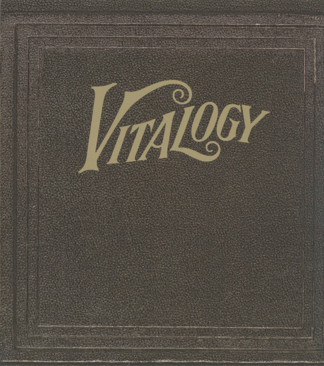

BLU-RAY
Vitalogy
Pearl Jam
Format BR
Media: — · Sleeve: —
—
Personal
Discogs SuggestedCA$84.58
Discogs MedianCA$84.58
Discogs HighCA$84.58
- Physical Copy ID
- BB-BR-007
- Year
- 2024
- Label
- Epic, Legacy
- Catalog #
- 19802819819, 19802819819
- Country
- USUS
- Genre / Style
- Rock · Grunge